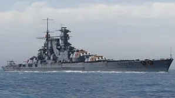

Navires célèbres
-

Bismarck
Cuirassé allemand célèbre pour sa puissance de feu et sa courte carrière durant la Seconde Guerre mondiale.
-

yamato
Le plus grand navire jamais construit par l'hummanité Il pouvais pulveriser n'importe quelle adversaire
-

Hood
"the pride and joy of the Royal Navy, ils disaient... pulveriser en une seule salve du Bismarck
-

Iowa
un des navires nouvelle génération construit par la marine américaine, devlopper pour escorter les porte-avions.
-

Richelieu
Cuirassé français rapide, équipé de deux tourelles quadruples à l’avant, très puissant en combat frontal.
-

Prinz Eugen
Croiseur lourd allemand robuste, célèbre pour sa survivabilité et sa participation à l’opération Rheinübung.
-

Vladivostok
Cuirassé soviétique très résistant à moyenne portée, conçu pour encaisser et dominer les combats rapprochés.